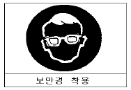
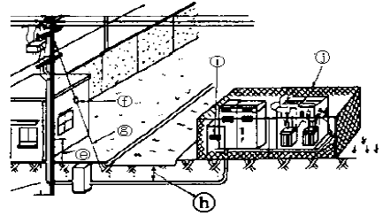

모터그레이더운전기능사 (2004-02-01 기출문제)
1과목: 임의 구분
1. 기관의 커넥팅 로드가 부러질 경우 직접 영향을 받는 곳은?
- 실린더 헤드
- 오일팬
- 실린더
- 밸브
(정답률: 알수없음)

2. 압력의 단위가 아닌 것은?
- dyne
- psi
- bar
- ㎏f/cm2
(정답률: 알수없음)
3. 실린더헤드 등 면적이 넓은 부분에서 볼트를 조이는 방법으로 맞는 것은?
- 외측에서 중심을 향하여 대각선으로 조인다.
- 규정 토크를 한번에 조인다.
- 조이기 쉬운 곳부터 조인다.
- 중심에서 외측을 향하여 대각선으로 조인다.
(정답률: 알수없음)
4. 직접 분사식 엔진의 장점 중 틀린 것은?
- 연료의 분사 압력이 낮다.
- 실린더 헤드의 구조가 간단하다.
- 구조가 간단하므로 열효율이 높다.
- 냉각 손실이 적다.
(정답률: 알수없음)
5. 분사펌프의 플런저와 배럴 사이의 윤활은?
- 기관 오일
- 경유
- 유압유
- 그리스
(정답률: 알수없음)
6. 디젤기관의 노킹 방지책으로 틀린 것은?
- 연료의 착화점이 낮은 것을 사용한다.
- 흡기압력을 높게 한다.
- 흡기온도를 높인다.
- 실린더 벽의 온도를 낮춘다.
(정답률: 알수없음)
7. 라디에이터 캡을 열었을 때 냉각수에 오일이 섞여있는 경우의 원인은?
- 기관의 윤활유가 너무 많이 주입되었다.
- 수냉식 오일쿨러(oil cooler)가 파손되었다.
- 라디에이터가 불량하다.
- 실린더 블록이 과열되었다.
(정답률: 알수없음)
8. 압력식 라디에이터 캡에 대한 설명으로 적합한 것은?
- 냉각장치 내부압력이 부압이 되면 공기밸브는 열린다.
- 냉각장치 내부압력이 규정보다 낮을 때 공기밸브는 열린다.
- 냉각장치 내부압력이 규정보다 높을 때 진공밸브는 열린다.
- 냉각장치 내부압력이 부압이 되면 진공밸브는 열린다.
(정답률: 알수없음)
9. 윤활유 사용 방법으로 옳은 것은?
- SAE 번호는 일정하다.
- 여름은 겨울보다 SAE 번호가 큰 윤활유를 사용한다.
- 계절과 윤활유 SAE 번호는 관계가 없다.
- 겨울은 여름보다 SAE 번호가 큰 윤활유를 사용한다.
(정답률: 알수없음)
10. 오일량은 정상이나 오일압력계의 압력이 규정치보다 높을 경우 조치사항 중 옳은 것은?
- 오일을 보충한다.
- 유압 조절밸브를 조인다.
- 유압 조절밸브를 푼다.
- 오일을 배출한다.
(정답률: 알수없음)
11. 공기청정기의 설치 목적은?
- 연료의 여과와 소음방지
- 공기의 여과와 소음방지
- 공기의 가압작용
- 연료의 여과와 가압작용
(정답률: 알수없음)
12. 발전기에서 발생되는 유도기전력의 크기와 관계 없는 것은?
- 콘덴서 수
- 전자력의 크기
- 발전기의 회전속도
- 스테이트 코일의 권수
(정답률: 알수없음)
13. 건설기계장비에서 발전기는 어떤 발전기를 주로 사용하고 있는가?
- 와전류 발전기
- 2상 교류발전기
- 직류발전기
- 3상 교류발전기
(정답률: 알수없음)
14. 다음의 조명에 관련된 용어의 설명으로 틀린 것은?
- 광도의 단위는 캔들이다.
- 피조면의 밝기는 조도이다.
- 빛의 세기는 광도이다.
- 조도의 단위는 루멘이다.
(정답률: 알수없음)
15. 예열플러그가 15∼20초에서 완전히 가열되었을 경우 가장 적절한 것은?
- 접지되었다.
- 다른 플러그가 모두 단선되었다.
- 단락되었다.
- 정상 상태이다.
(정답률: 알수없음)
16. 전해액을 만들 때 어떻게 하여야 하는가?
- 황산을 가열하여야 한다.
- 황산에 물을 부어야 한다.
- 물에 황산을 부어야 한다.
- 철재 용기를 사용하여야 한다.
(정답률: 알수없음)
17. 축전지의 충방전 작용은?
- 물리 작용
- 화학 작용
- 환원 작용
- 전기 작용
(정답률: 알수없음)
18. 굴삭기의 조종레버 중 굴삭작업과 직접 관계가 없는 것은 ?
- 암(스틱) 제어레버
- 붐 제어레버
- 스윙 제어레버
- 버킷 제어레버
(정답률: 알수없음)
19. 무한궤도식 굴삭기 트랙의 조정은 어느것으로 하는가?
- 아이들러의 이동
- 하부 롤러의 이동
- 상부 롤러의 이동
- 스프로킷의 이동
(정답률: 알수없음)
20. 지게차의 앞바퀴는 어디에 설치되는가?
- 섀클 핀에 설치된다.
- 직접 프레임에 설치된다.
- 너클 암에 설치된다.
- 등속이음에 설치된다.
(정답률: 알수없음)
2과목: 임의 구분
21. 지게차를 주차시킬 때 포크의 적당한 위치는?
- 지상으로부터 30cm 위치
- 지상으로부터 20cm 위치
- 지면에 내려 놓는다.
- 아무 위치나 상관없다.
(정답률: 알수없음)
22. 스크레이퍼 굴착 작업시 견인력을 증가시키기 위해 밀어 주는 작업은?
- 트레인 작업
- 드로잉 작업
- 풀링 작업
- 푸싱 작업
(정답률: 알수없음)
23. 트랜스미션에서 잡음이 심할 경우 운전자가 가장 먼저 확인해야 할 사항은?
- 치합 상태
- 기어 오일의 질
- 기어 잇면의 마모
- 기어 오일의 양
(정답률: 알수없음)
24. 타이어에 9.00 - 20 - 14PR 로 표시된 경우 20 이 의미하는 것은?
- 외경
- 내경
- 폭
- 높이
(정답률: 알수없음)
25. 작업 중 충전계에 빨간불이 들어오는 경우는?
- 충전계통에 이상이 없음을 나타낸다.
- 정상적으로 충전이 되고 있음을 나타낸다.
- 충전이 잘 되지 않고 있음을 나타낸다.
- 충전계통에 이상이 있는지 알 수 없다.
(정답률: 알수없음)
26. 불도우저가 진흙에 트랙 일부가 묻힐 정도로 빠진 경우, 진흙에서 벗어나는 방법으로 가장 거리가 먼 것은?
- 다른 도저의 윈치를 사용하여 벗어난다.
- 유압 잭으로 고이고 이탈 주행한다.
- 블레이드를 높이 들고 긴 침목을 트랙의 앞쪽에 와이어 로프로 묶고 전진 주행한다.
- 삽으로 차체의 밑 부분과 트랙 밑 부분의 진흙을 파내고 벼짚단을 깔고 주행한다.
(정답률: 알수없음)
27. 건설기계 신규등록검사를 실시할 수 있는 자는?
- 건설교통부장관
- 군수
- 검사대행자
- 행정자치부장관
(정답률: 알수없음)
28. 정기 검사대상 건설기계의 정기검사 신청기간 중 맞는 것은?
- 건설기계의 정기검사 유효기간 만료일 후 16일 이내에 신청한다.
- 건설기계의 정기검사 유효기간 만료일 전후 15일 이내에 신청한다.
- 건설기계의 정기검사 유효기간 만료일 전 5일 이내에 신청한다.
- 건설기계의 정기검사 유효기간 만료일 전 16일 이내에 신청한다.
(정답률: 알수없음)
29. 건설기계조종사 면허가 취소되었을 경우 그 사유가 발생한 날로부터 며칠이내에 면허증을 반납해야 하는가?
- 10일 이내
- 30일 이내
- 14일 이내
- 7일 이내
(정답률: 알수없음)
30. 제한외의 적재 및 승차 허가를 할 수 있는 관청은?
- 출발지를 관할하는 경찰청
- 시, 읍면 사무소
- 관할 시, 군청
- 출발지를 관할하는 경찰서
(정답률: 알수없음)
31. 편도 4차로 자동차 전용도로에서 굴삭기와 지게차의 주행 차선은?
- 4차로
- 3차로
- 2차로
- 1차로
(정답률: 알수없음)
32. 교차로 또는 그 부근에서 긴급자동차가 접근하였을 때 피양 방법으로 가장 적절한 것은?
- 그 자리에 즉시 정지한다.
- 교차로를 피하여 도로의 우측 가장자리에 일시 정지한다.
- 서행하면서 앞지르기 하라는 신호를 한다.
- 그대로 진행방향으로 진행을 계속한다.
(정답률: 알수없음)
33. 교통사고가 발생하였을 때 승무원으로 하여금 신고하게 하고 계속 운전할 수 있는 경우가 아닌 것은?
- 긴급자동차
- 긴급을 요하는 우편물 자동차
- 위급한 환자를 운반중인 구급차
- 특수자동차
(정답률: 알수없음)
34. 교통사고가 발생하였을 때 운전자가 가장 먼저 취해야 할 조치는?
- 경찰공무원에게 신고
- 즉시 사상자를 구호하고 경찰공무원에게 신고
- 즉시 보험회사에 신고
- 즉시 피해자 가족에게 알린다.
(정답률: 알수없음)
35. 유압오일의 온도가 상승할 때 나타날 수 있는 결과가 아닌 것은?
- 오일 누설의 저하
- 점도 저하
- 밸브류의 기능 저하
- 펌프 효율 저하
(정답률: 알수없음)
36. 유압유의 성질에 어긋난 것은?
- 인화점이 낮을 것
- 비중이 적당할 것
- 강인한 유막을 형성할 것
- 점성과 온도와의 관계가 양호할 것
(정답률: 알수없음)
37. 직동형, 평형피스톤형 등의 종류가 있으며 회로의 압력을 일정하게 유지시키는 밸브는?
- 릴리프 밸브
- 무부하 밸브
- 시퀀스 밸브
- 메이크업 밸브
(정답률: 알수없음)
38. 유압 회로내에 기포가 생기면 일어나는 현상이 아닌 것은 ?
- 작동유의 누설저하
- 공동현상
- 오일탱크의 오버플로우
- 소음증가
(정답률: 알수없음)
39. 유압장치의 취급에 옳지 않는 것은?
- 추운 날씨에는 충분한 준비 운전 후 작업한다.
- 종류가 다른 오일이라도 부족하면 보충 할 수 있다.
- 오일량이 부족하지 않도록 점검 보충한다.
- 가동중 이상음이 발생되면 즉시 작업을 중지한다.
(정답률: 알수없음)
40. 다음 중 압력, 힘, 면적의 관계식으로 올바른 것은?
- 압력 = 부피 / 면적
- 압력 = 면적 × 힘
- 압력 = 힘 / 면적
- 압력 = 부피 × 힘
(정답률: 알수없음)
3과목: 임의 구분
41. 피스톤 펌프의 특징 중 맞지 않은 것은?
- 일반적으로 토출압력이 높다.
- 펌프 효율이 높다.
- 구조가 간단하고 값이 싸다.
- 베어링에 부하가 크다.
(정답률: 알수없음)
42. 유압펌프에서 소음이 발생하는 원인이 아닌 것은?
- 오일 속에 공기가 들어 있을 때
- 펌프의 속도가 느릴 때
- 오일의 양이 적을 때
- 오일의 점도가 너무 높을 때
(정답률: 알수없음)
43. 유압계통의 최대압력을 제어하는 밸브는?
- 첵 밸크
- 릴리프 밸브
- 오리피스 밸브
- 쵸크 밸브
(정답률: 알수없음)
44. 일반적으로 건설기계의 유압펌프는 무엇에 의해 구동되는 가?
- 엔진의 플라이휠에 의해 구동된다.
- 캠축에 의해 구동된다.
- 에어 컴프레셔에 의해 구동한다.
- 변속기 P.T.O 장치에 의해 구동된다.
(정답률: 알수없음)
45. 일반적인 유압 실린더의 종류에 해당하지 않는 것은?
- 단동 실린더 피스톤(piston) 형
- 단동 실린더 램(ram) 형
- 단동 실린더 레이디얼(radial) 형
- 복동 실린더 양로드(double rod) 형
(정답률: 알수없음)
46. 유압 실린더의 종류가 아닌 것은?
- 단동형
- 복동형
- 레이디얼형
- 다단형
(정답률: 알수없음)
47. 작업장에서 휘발유 화재가 일어났을 경우 가장 적합한 소화 방법은?
- 소다 소화기의 사용
- 탄산가스 소화기의 사용
- 불의 확대를 막는 덮개의 사용
- 물 호스의 사용
(정답률: 알수없음)
48. 폭발의 우려가 있는 가스 또는 분진을 발생하는 장소에서 지켜야 할 일에 속하지 않는 것은?
- 불연성 재료의 사용금지
- 화기의 사용금지
- 인화성 물질 사용금지
- 점화의 원인이 될 수 있는 기계 사용금지
(정답률: 알수없음)
49. 소화작업에 대한 설명 중 틀린 것은?
- 가열물질의 공급을 차단시킨다.
- 유류화재시 표면에 물을 붓는다.
- 산소의 공급을 차단한다.
- 점화원을 발화점 이하의 온도로 낮춘다.
(정답률: 알수없음)
50. 작업장에서의 복장에 대하여 유의할 사항으로 틀린 것은?
- 상의의 옷자락이 밖으로 나오지 않도록 한다.
- 작업복은 몸에 맞는 것을 입는다.
- 기름이 묻은 작업복은 될 수 있는 한 입지 않는다.
- 수건은 허리춤에 끼거나 목에 감는다.
(정답률: 알수없음)
51. 렌치 작업시의 주의사항 설명 중 틀린 것은?
- 렌치를 해머로 두드려서는 안된다.
- 높거나 좁은 장소에서는 몸을 안전하게 하고 작업한다.
- 너트보다 큰 치수를 사용한다.
- 너트에 렌치를 깊이 물린다.
(정답률: 알수없음)
52. 스패너 작업 방법으로 안전상 올바른 것은?
- 스패너로 죄고 풀 때 항상 앞으로 당긴다.
- 스패너로 볼트를 죌 때는 앞으로 당기고 풀 때는 뒤로 민다.
- 스패너 사용시 몸의 중심을 항상 옆으로 한다.
- 스패너의 입이 너트의 치수보다 조금 큰 것을 사용한다.
(정답률: 알수없음)
53. 작업 중 기계장치에서 이상한 소리가 날 경우 가장 적절한 작업자의 행위은?
- 작업종료 후 조치한다.
- 즉시, 작동을 멈추고 점검한다.
- 속도가 너무 빠르지 않나 살핀다.
- 장비를 멈추고 열을 식힌후 계속 작업한다.
(정답률: 알수없음)
54. 다음 그림은 안전표지의 어떠한 내용을 나타내는가?

- 지시표지
- 금지표지
- 경고표지
- 안내표지
(정답률: 알수없음)
55. 인양 물체의 중심을 측정하여 인양하여야 한다. 다음 중 잘못된 것은?
- 와이어로프나 매달기용 체인이 벗겨질 우려가 있으면 되도록 높이 인양한다.
- 인양 물체를 서서히 올려 지상 약 30cm지점에서 정지 확인한다.
- 인양 물체의 중심이 높으면 물체가 기울 수 있다.
- 형상이 복잡한 물체의 무게 중심을 목측한다.
(정답률: 알수없음)
56. 연삭기의 안전한 사용방법이 아닌 것은?
- 숫돌측면 사용제한
- 보안경과 방진마스크 착용
- 숫돌덮개 설치 후 작업
- 숫돌과 받침대 간격 6mm 이상 유지
(정답률: 알수없음)
57. 도로굴착시 황색의 도시가스 보호포가 나왔다. 매설된 도시가스 배관의 압력은?
- 배관의 압력에 관계없이 보호포의 색상은 황색이다.
- 저압
- 고압
- 중압
(정답률: 알수없음)
58. 다음 중 도시가스 제조사업소의 부지경계에서 정압기까지에 이르는 배관을 호칭하는 용어는?
- 공급관
- 내관
- 주관
- 본관
(정답률: 알수없음)
59. 인체에 전류가 흐를 때 위험정도의 결정요인 중 가장 관계가 작은 것은?
- 인체에 전류가 흐른 시간
- 전류가 인체에 통과한 경로
- 인체의 연령
- 인체에 흐른 전류크기
(정답률: 알수없음)
60. 다음은 시가지에서 시설한 고압 전선로에서 자가용 수용가에 구내 전주를 경유하여 옥외 수전설비에 이르는 전선로 및 시설의 실체도이다. 날에서 지중 전선로의 차도 부분의 매설 깊이는 몇[m]인가?

- 1.2[m]
- 1[m]
- 0.75[m]
- 0.5[m]
(정답률: 알수없음)